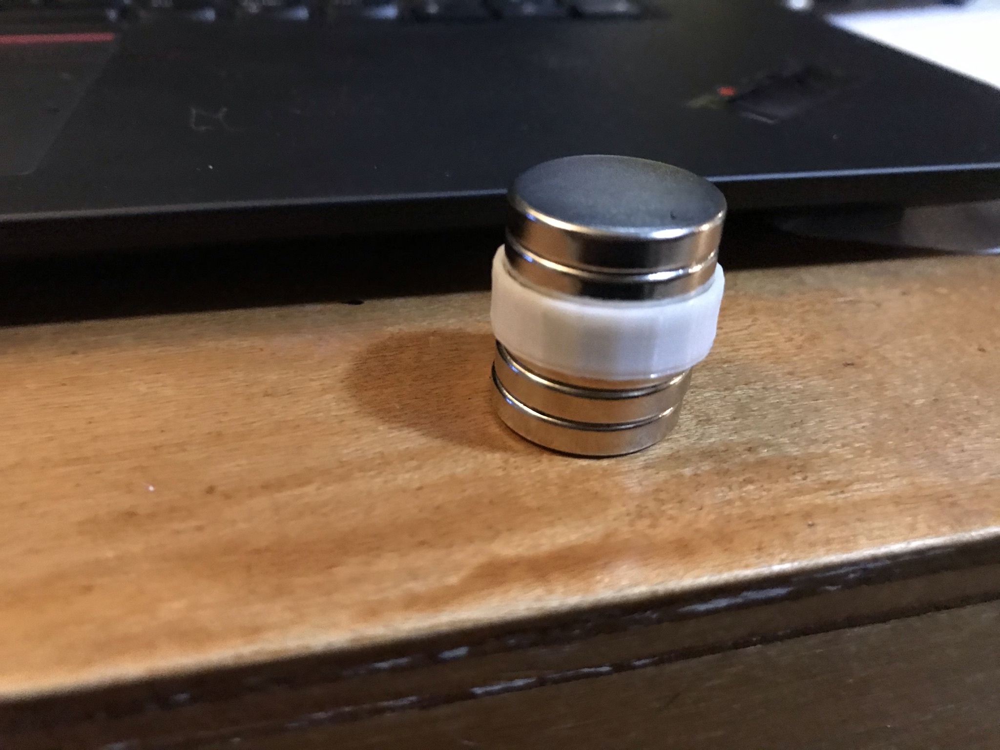

What is sputtering? What is a magnetron? What does this device do?
Sputtering describes the ejection of microscopic particles from a solid material after the material is hit with other energetic particles (in this case the particles that make up the plasma).
A core tenent of all magnetrons is the use magnetic feilds to influence the movement of electrons within a vaccum environment.
So to combine these two, we basically have a vaccum chamber that uses a magnetic field to control the movement of energetic charged
particles in a way that slams them into a target material (usually a metal) and displaces microscopic amounts of it.
Those particles then travel and deposit onto objects you place in the chamber.
Essentially this device can coat anything you want with a thin film of atomically pure metal(you can do non-metals as well but I havent gottem the chance to try yet).
There are alot of potential uses for this ranging from computer manufacturing to flexible thin circuts to art.
To go into a little more depth here is a great picture I found of how the prosses works:
At the top and bottom of the screen you can see an anode and cathode between which a voltage is applied (in my case 2.1kV).
This turns the gas within the chamber into a plasma. At the very bottom of the screen you can see two red and one blue rectangles. These are cross sections of a
outer ring magnet(red) and inner cylindrical magnet (blue). The curved white lines above them show their field lines. As you can see the field lines of
the outer magnet flow into that of the inner one, forming a "m". If you imagine this shape in 3D it is kind of like bundt-tray-shaped magnetic field. This field moves the plasma
within the chamber around alot meaning that it cannot become concentrated, however there is a small "deadzone" in the magnetic feild near the cathode plate and directly inbetween
the magnets where the plasma isnt scattered by the field but instead confined by it on all sides. This area of concentrated plasma is the two bright green spots near the bottom. Again if
you imagine this in 3D its really a doughnut shape. So basically this device is similar to my IEC Demo fusor at the top of this website. Both are plasma confinement devices: one uses electrostatic
confinement, and one uses magnetic. This doughnut of high density plasma sits right on top of the cathode/target material. By intentioally confining the plasma (high energy particles) here,
the sputtering rate is vastly increased because the argon atoms that need to hit the material being sputtered are pressed right up against it. This is what makes magnetron sputtering one of
the faster meathods of sputtering. This is basically all there is too it. The yellow stuff in the center of the screen moving upwards is the atoms that have been displaced from the target
material. They go up and attach to the substrate(thing you want to coat).
*Note his is an ongoing prodject because I need an argon tank to run it. I hope to get one within the next month and then I will post the results.
Vaccum Chamber build
I started by scoring around the outside of a thick glass bottle with a glass cutter. I then placed rubber gaskets of both sides of the score and poured hot and cold water over the mark until the bottle broke along the line.Here is the bottle after being broken. As you can see it did not break completely clean, so I had to do some sanding.Sanding the edge. I slowly scaled up the grit to 2000, giving the super smooth finish needed for vacuum connections.I drilled a hole in the bottom of the bottle (top of the new chamber) using this diamond hole saw bit.Near the bottom you can see the beginnings of my gasket compression ring. I made it out of scrap steel sheet metal.
I didnt have a drill bit big enough for the hole size I needed so I widened the hole with a dremel. Just like the bottle the ring was marked up and needed to be sanded/polished.Sanded up to 2000 grit.
Polished to mirrior finish with dremelI cut out a viton gasket that goes between the gasket compression ring and the glass. When the bolt tightens it squeezes the gasket, forming a seal.
Final setupBottom view Here is the substrate holder/anode (substrate is the thing you want to coat) I made it by twisting thin stainless steel wire into a ring for the substrate to sit on. I then added two connecting pieces of wire that allow it to hang from the compression nut at the top of the chamber. This is grounded wich makes it the anode. The wire is a little too thin to spot weld onto the nut so I just used aligator clips.Top view of substrate holder/anodeFinal chamber
Magnetic confinement setup
As described at the top of this page, To form the cathode and magnetic confinement setup I needed to place a strong cylintrical magnet inside a strong ring magnet, and place it below the cathode/sputtering target material. Because of the heat generated by the plasma can demagnitize the magnets, they also need to be liquid cooled. Follow the captions below for an explination of the build prosses.
To begin I had to source a strong ring magnet. I got mine for free from... (you guessed it) a microwave magnetron. The magnetron still in the microwave is circled here. I am basically taking a magnet from one magnetron(cavity) and using it to make another(sputtering). The outer magnet I am holding here is the one taken from a magnetron. In the back you can see another microwave magnetron and two of those same magnets.

Here are the cylindrical magnets I placed inside. I had to buy them because randomly finding a magnet that fit perfectly in the ring one would have been really hard. On the outside (the white thing) you can see an early test of my 3D-printed spacing ring. This is needed because the central magnets need to be in the exact center of the ring magnets for the field to flow in uniformly. Finding the right size for a spacing ring took alot of tries. On the left you can see the one that finally worked with the magnets pressfit on. All my other attempt with different diameters and wall thicknesses can be seen on the right. Bottom of the magnet setup(central magnet protrudes a bit). In the picture above this one you can kind of see the last thing I did which was add a small steel plate to this side. this strengthens the magnetic field upwards, more effectivley confining the plasma.Another angleThe next thing I did was design a container for a "liquid heat sink". Essentially it holds the magnet setup in the center and allows you to fill it with water that absorbs heat and keeps the magnet cool. I also printed tabs that go on the edges that hold the target material plate.Mid printFinished printAfter cleaningWith the magnet in place.
Cathode/target
My target is a copper plate, but one thick enough to not buckle under vaccum was way too expensive. So I decided to make a reinforcing back plate out of cheap steel and epoxy it on to the copper one.
I started by cutting a hole in the 6" by 6" steel plate big enough for the magnet. I did this with a jigsaw so you can see me in the picture cleaning up the rough edges with a dremel. I removed steel here for the same reason I added it on the back. This is because the magnet sticking to metal on one side weakens the field on that side and stengthens it on the other. I used this to my benifit when I added a plate on the back because I want the field coming out of the top into the chamber to be strong. But having steel here where the top of the magnets are would have had the opposite effect. So by cutting this hole I keep the target material rigid enough for vaccum, but leave a small section of only copper where the magnet can rest directly against it.Here is the finished target with the steel plate epoxied on. That hole in the center where the copper shows is where the magnets nestle in.I used JB weld to attach 2 3D-Printed tabs to each of the outer edges. These tabs hold the target plate in place because the magnets try to move the plate so they touch the steel portion(cant let that happen).
Final Setup
The tubing I use to connect my vaccum pump is pretty stiff and its natural bend makes it want to tip over my whole seltup. To fix this I made a sort of arm out of 2x4 that holds the tubing still directly over the hose barb. If you look closley on the left you can see the U-shaped tubing holders I cut and bent from microwave sheet metal. Close up of the tubing holders. I fed small bolts through the wood and holes in the sides of the U-shaped holders. With this setup I can tighten and loosten the bolts to hold and release the tubing.